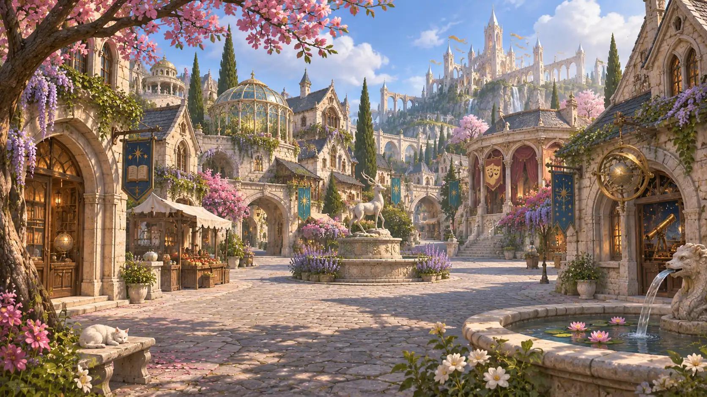

🍎 Лавка плодов 🔤 Слоги 📖 Гермес 🏛️ Храм 🔭 Звёзды 👻 Фонтан 🌿 Сад 🎨 Школа Фиалки 📜 Ратуша · Совет → К дубуЛадабург
Пока город встречает гостей. Скоро в его зданиях появятся приключения.

🍎 Лавка плодов 🔤 Слоги 📖 Гермес 🏛️ Храм 🔭 Звёзды 👻 Фонтан 🌿 Сад 🎨 Школа Фиалки 📜 Ратуша · Совет → К дубуПока город встречает гостей. Скоро в его зданиях появятся приключения.